Meetings, meetings and more meetings
We started the day and, as I told you yesterday, I got up early: I was up before 8. Let's hope this lasts long enough. I felt good, a little tired because I would have liked to sleep more, but you can't always. Tonight I'll try to fall asleep quickly, because early, no way, HAHAH.
We went to have breakfast at Luma and you won't believe this. I'm one of those people with an excellent memory; not photographic, but good enough to remember small moments from 25 years ago. About 8 years ago I dreamed I was visiting a church that sat in the middle of a roundabout, and as it turns out, today was the day I visited it. That's why my dreams matter to me: eventually they come true. It was a beautiful chapel in the middle of the roundabout. I couldn't take a photo, but I didn't need to go inside to know what it was like. It's the Capilla San Benito, now Parroquia San Benito, designed by architect Armando Sol, a few blocks from Luma.
History of the Capilla San Benito →
A few minutes earlier we'd been figuring out what to do: José wanted to go straight to Usulután and I wanted to stop and buy the phone mount for the bike. Neither of us got what we wanted: we went to buy the mount, but we needed cash, and with the 2 dollars we had we obviously weren't getting anywhere. So I said: let's go have breakfast. At Luma, as fate would have it, I ordered chilaquiles because I miss Xela, and José ordered a traditional breakfast, haha: eggs and beans, which in El Salvador they call "frijoles molidos" and we call "frijoles volteados".
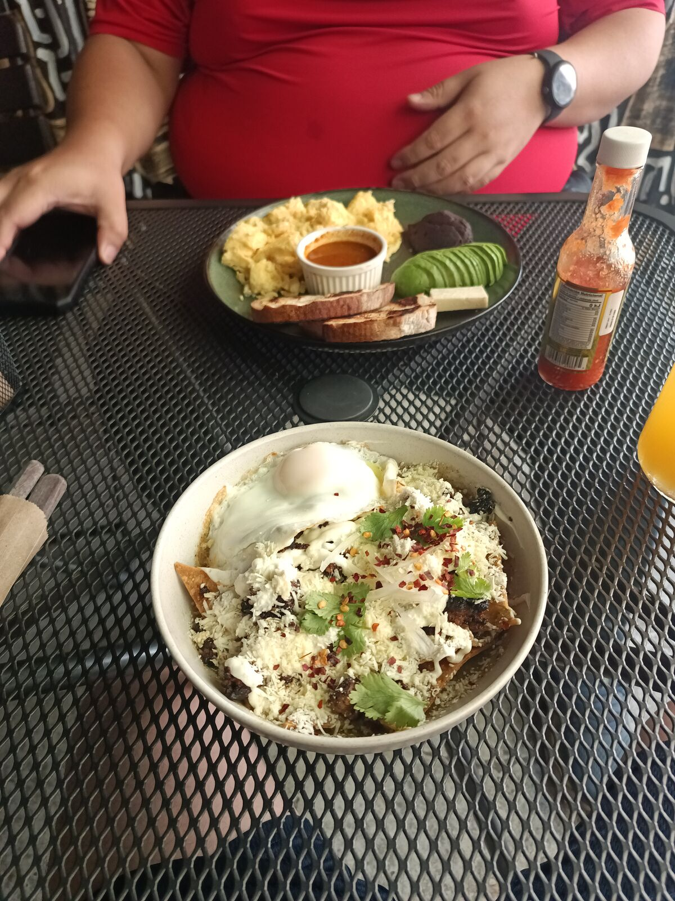
Before leaving, and given the route José had described, I said: I'm getting an iced coffee, because it's going to be a long ride. And so it was. Since we were supposedly at one of the best coffee shops in El Salvador, I ordered it. It was good, although acidic coffee isn't my favorite.
We set Waze for Usulután, where there was a beautiful straight stretch we wanted to ride. About 90 minutes later we merged onto a highway like nothing I'd ever seen. My Guatemalan mind wasn't ready for that highway, or for seeing that roads in El Salvador are well maintained, unlike Guatemala's. It pains me deeply to say it.
There's an idea I use a lot to seize opportunities. It comes from optimal stopping theory, the famous 37% rule. An example: if you're heading somewhere you know has little parking, it's almost always best to take a spot a few blocks early. Maybe it's not the best spot, but it'll be better than what's ahead, because it's very unlikely something will open up further on. It's the lowest-risk decision.
On this beautiful highway we noticed something: there was a dedicated, marked and, above all, protected space for cyclists. A bike lane at least 50 km long on the road to Usulután. With that idea in mind, I told José: "Look, we won't find this further ahead, we should take advantage. Today I'm riding." And he said: "Sure, sounds good."
We unloaded and I started pedaling. I put on a wool sweater because I didn't bring my windbreaker, but it was mostly to protect myself from the sun. The road was a bit uphill, which wasn't the plan, because I kept telling José: "I think from here on it's all downhill," HAHAHA. Wrong. I pedaled uphill for an hour, about 8 km I'd say, and we stopped because lots of cars were passing and José couldn't drive slowly behind me: the road went from two lanes to one. So we put the bike in the car and headed for El Socorro, a spot on the route before Usulután.
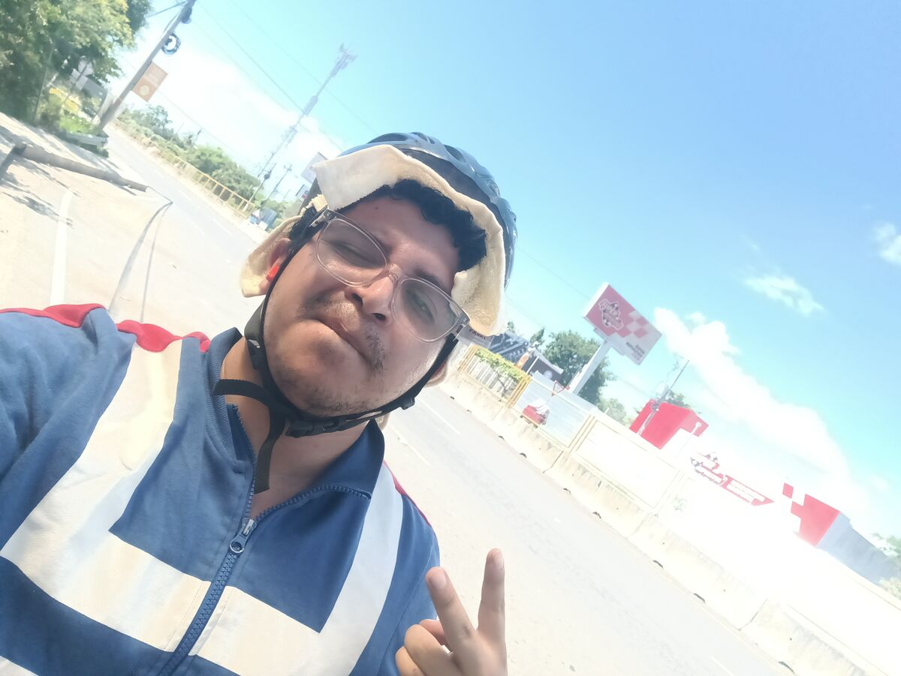
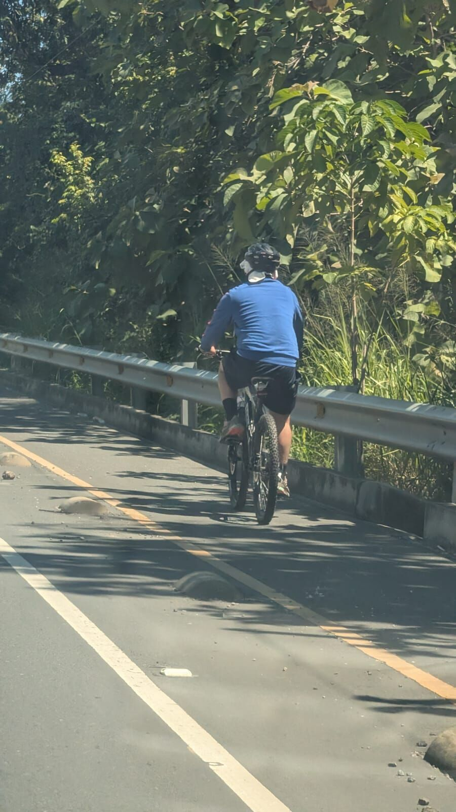
When I started pedaling I felt my leg muscles straining and waking up. I started laughing, because it had been months since I last exercised properly: I've done nothing but travel and sleep, hahaha. So yes, they went into crisis and my heart started racing. On top of that, I have a nose problem that's really getting to me: it gets blocked all the time. I thought it was from living in Xela, the cold, the pollution, the volcanic particles, but it turns out it isn't. The sun was scorching, but it didn't stop me from pushing on to the goal. Right after getting back in the car I still had my iced coffee, which wasn't cold anymore because of the heat, but it was good. So that was my electrolyte drink… until later I had a real one, haha.
We got back in the car to head to the spot José had picked for riding, about 20 km of straight road, but suddenly: the first meeting. José spent about an hour and a half on it, we passed the straight and, instead of riding, we had to go straight to Puerto El Triunfo, a beautiful place that cost us half our budget… just to park.
We reached the El Triunfo boardwalk, HAHAHA, with enough time for the next meeting, with Juan Carlos, a friend José met in Colombia. But as we arrived, a municipal worker stopped us and asked for 1 dollar, half the cash we had, so we panicked looking for "fichas", or coins, for those who aren't from Guatemala. We parked, and look at this beautiful place, with a gorgeous view of a river flowing into the sea, and a pirate too, because Isla Tortuga is nearby, like the one in Pirates of the Caribbean, HAHAHA.
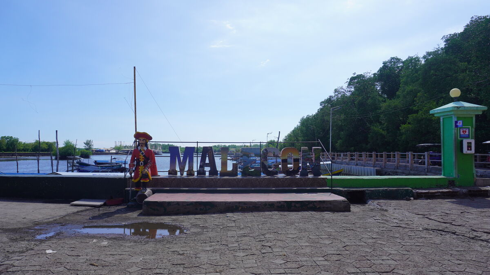
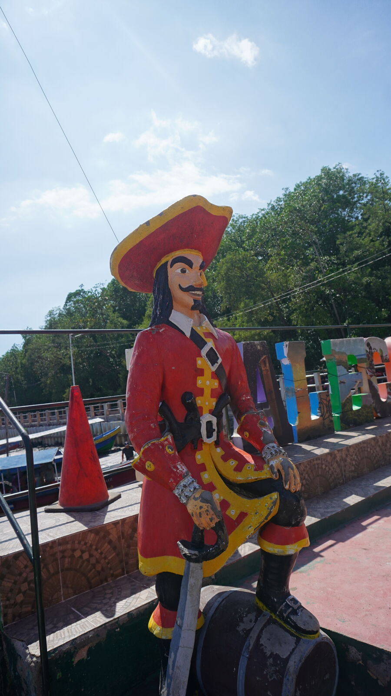
I went to take photos and when I came back Juan Carlos was already at the table. We said hi and started talking (me, deep down, wanting to watch the Apex Legends LAN in Las Vegas, the game I've been hooked on for 7 years now). He suggested a seafood platter and a stuffed fish. Look at those monster plates: so big I couldn't finish, and everything fresh, straight from the sea. We talked a ton and, to finish, he ordered us some clam pupusas, HAHAHAHA. They were really good and José loved them, but I couldn't fit another centimeter of food, so I got mine to go.
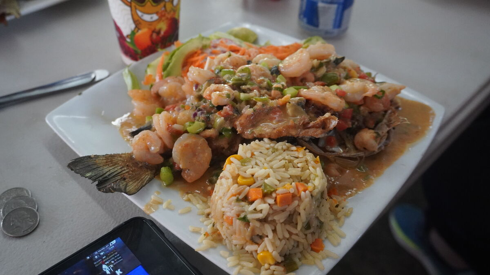
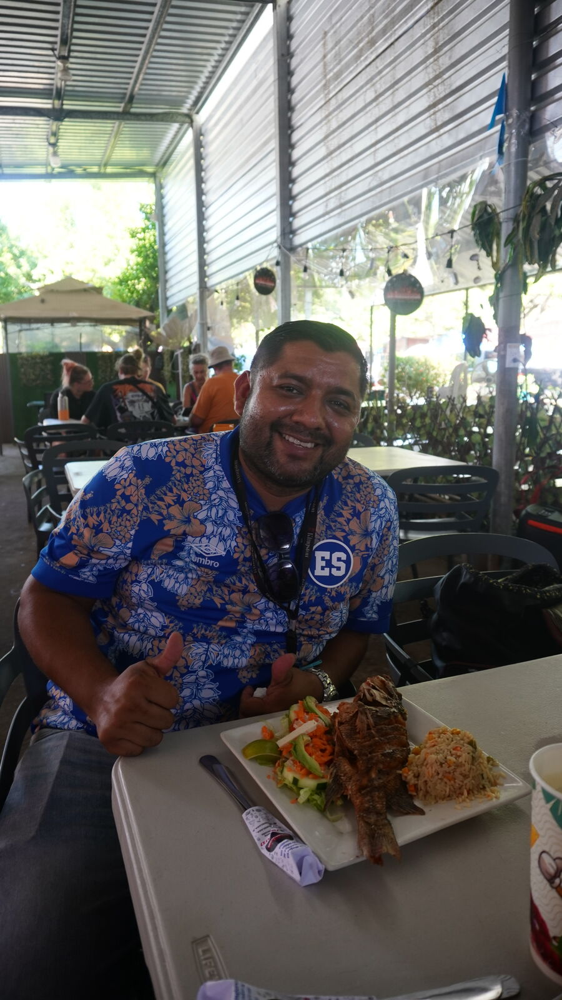
All that food made me need the boardwalk bathroom, which, I have to say, is badly neglected. Everything's nice, the roads, the places, and to use a public bathroom they charged me, haha. Come on: not only do we have no budget, I had to pay a "cora", or 25 cents, for the uninitiated. And I'm like: "Nooo, the last dollar of the budget." We finished eating and José says: "Lend me a choca," which is what we call 25 cents in Guatemala, HAHAHA. Officially we have 10% of our initial budget left, which was 5 dollars, HAHAHA.
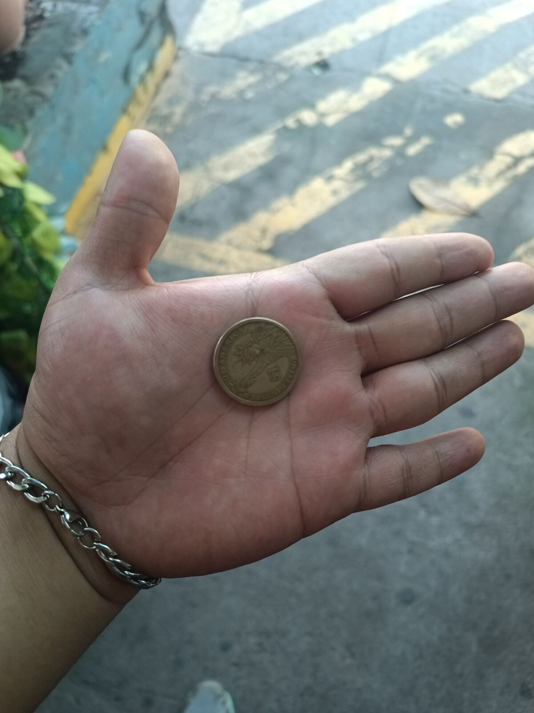
Juan Carlos walked us to the car and we showed him a bit of what we're carrying. During lunch I'd been thinking "I hope I locked the car," haha, because we have the printer and the bike inside. Then I found a little robot that snuck into the move and stayed in my car, and I gave it to him for his son, as thanks for treating us to lunch, which was not cheap with everything we ate. That's what we're on this trip for: to inspire and get more people into technology.
We left El Triunfo and boom: José's second call, which lasted more than three hours. We covered a good part of the route and José was still on the call. We went up the San Miguel volcano, came down, and José was still on the call, haha. About 10 km from our destination we stopped because we found another beautiful highway, like something from the United States, again with a bike lane. We stood there about 20 minutes and then he said: "No, let's go, this is going to take a while," HAHAHAHA.
We got to our lodging at six, an Airbnb in a very nice gated neighborhood with a pool. We were both tired and just staring at our phones, so I said: "Let's go to the pool, because here we'll just be on our phones; better to go there and talk." On the way two damn dogs attacked us, but we came out victorious, and the pool is where we really got to connect.
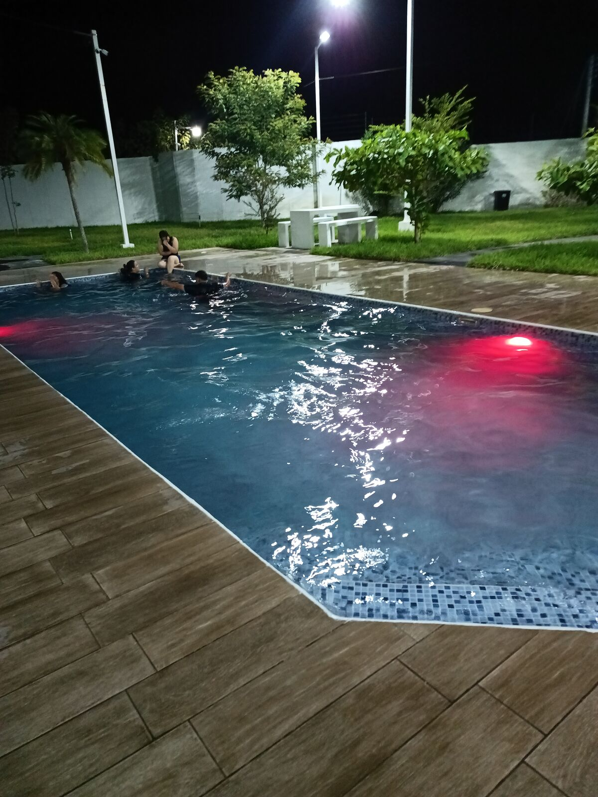
The onions that made José grow up. I hope José writes this story when he does his book, and if you know him, ask him about it. José is an entrepreneur who is currently building more than 20 apps at once; he can carry multiple projects and lead them. He moves around the world working remotely: some days he's in Guatemala, others in Colombia and others in Azerbaijan. But he wasn't born with money or resources: he started out hauling sacks of onions at the zone 4 bus terminal in Guatemala City.
Of everything we talked about, he told me: "Look, that's why I do this. Because if I, who used to haul sacks of onions, can travel, live off my work, create companies and help people, someone with more than I had can go much further." José's level of conviction and commitment left me amazed, and I told him: "Yes, I get it."
We left the pool for a Dollar City, which was closed, and got lost many times because I'm terrible at reading Google Maps, HAHAHA. We went to Pollo Campestre at 9 p.m. and it took them 50 minutes to bring us some chicken. We were getting annoyed, because how can it take so long, but the thing is, the chicken was freshly made. We also ordered some flan and the waiter comes over: "Sorry, we're out, but we have chocoflan." And we're like: "OK, chocoflan then." José asked for more horchata and there wasn't any; he asked for lemonade and there wasn't any either, hahaha. There was nothing, I guess because of the hour. When the food arrived, HAHAHAHA, José got almost a whole chicken, and I got two pieces that were tasty, but I couldn't finish them.
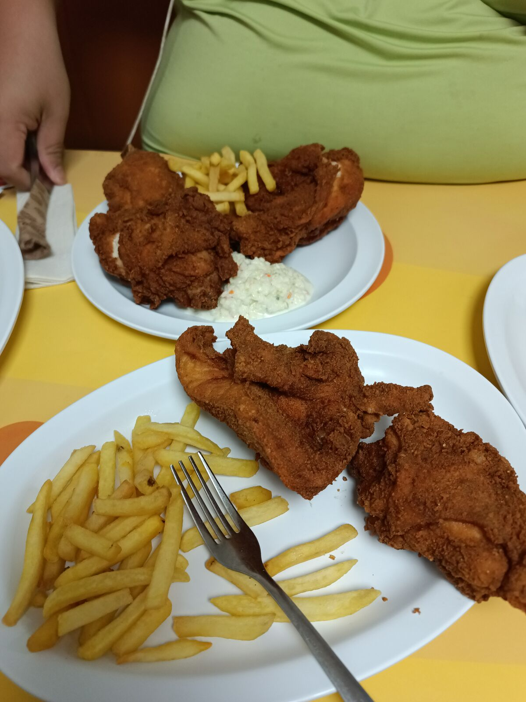
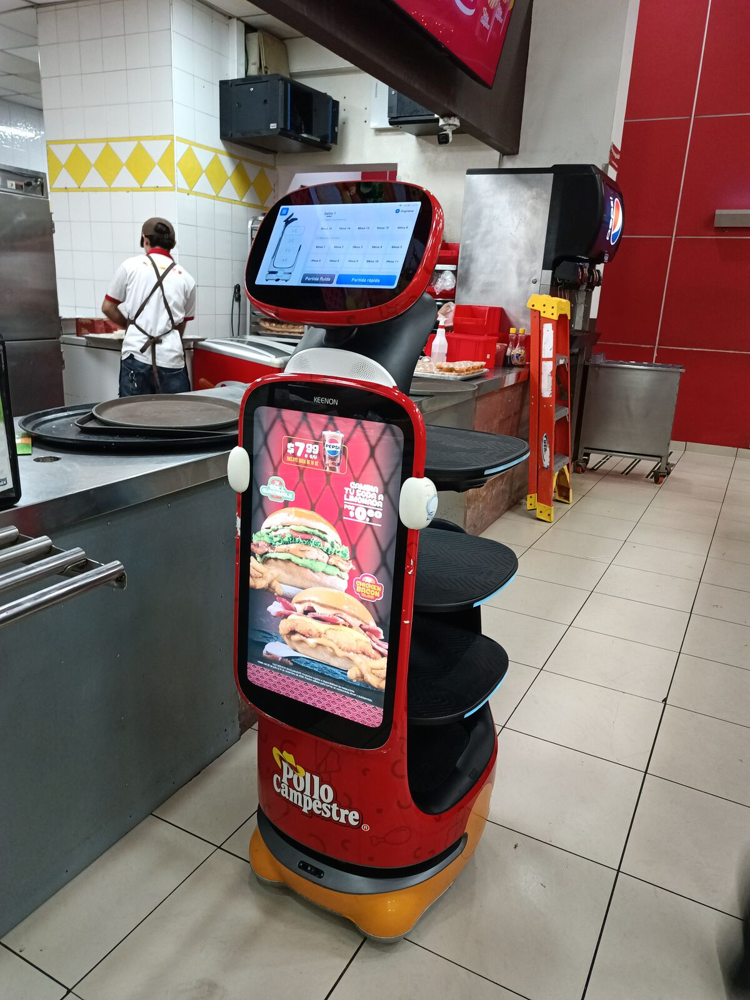
We recorded the daily recap and here I am, writing this at midnight, because they brought our chicken late, and worried because we only have 50 cents to get to Honduras and then Nicaragua.
Tomorrow we reach Chinandega. We hope to help more people: today we're building Juan Carlos's website, and I've already developed an app to make things easier. We're fine-tuning details and getting the hang of all this, so please be patient if something goes wrong, haha. That's all for today. Let's see what misadventures await us tomorrow… well, later today. Bye.
👆 Tap or click any point on the map to read that day's chapter.